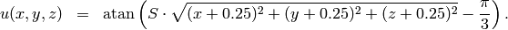
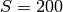
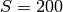
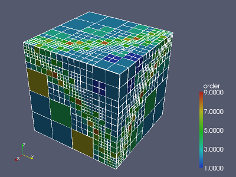
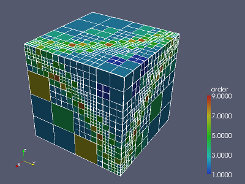

Internal Layer (Elliptic)¶
Git reference: Benchmark layer.
This example has a smooth solution that exhibits a steep internal layer inside the domain.
Partial Differential Equation solved: Poisson equation
(1)
Domain of interest: Unit cube  .
.
Right-hand side:
(2)![\begin{eqnarray*}
f(x,y,z) & = & \frac{3}{\sqrt{(x+0.25)^2+(y+0.25)^2+(z+0.25)^2}}\
\times \ \frac{S}{S^2 \cdot [\sqrt{(x+0.25)^2+(y+0.25)^2+(z+0.25)^2} - \frac{\pi}{3} ]^2 + 1} \\ \nonumber
& & -\ [(x+0.25)^2+(y+0.25)^2+(z+0.25)^2] \\ \nonumber
& & \times \ \biggl\lbrace \frac{2\ S^3 \cdot [\sqrt{(x+0.25)^2+(y+0.25)^2+(z+0.25)^2} - \frac{\pi}{3}] }
{[(x+0.25)^2+(y+0.25)^2+(z+0.25)^2]\ \times\ \bigl[ S^2 \cdot [\sqrt{(x+0.25)^2+(y+0.25)^2+(z+0.25)^2}-\frac{\pi}{3} ]^2 + 1 \bigr]^2} \\ \nonumber
& & +\ \frac{S}{[(x+0.25)^2+(y+0.25)^2+(z+0.25)^2]^{\frac{3}{2}}\ \times \
\bigl[ S^2 \cdot [\sqrt{(x+0.25)^2+(y+0.25)^2+(z+0.25)^2} - \frac{\pi}{3} ]^2 + 1\bigr]} \biggr\rbrace \\ \nonumber
\end{eqnarray*}](../../../_images/math/d302223a403551f48576a0170ba6f21826f4d510.png)
Exact solution is:
(3)
where  is a parameter (slop of the layer). With larger , this problem
becames difficult for adaptive algorithms, and at the same time the advantage of
adaptive
is a parameter (slop of the layer). With larger , this problem
becames difficult for adaptive algorithms, and at the same time the advantage of
adaptive  -FEM over adaptive low-order FEM becames more significant. We will
use  in the following.
-FEM over adaptive low-order FEM becames more significant. We will
use  in the following.
Code for the exact solution and the weak forms:
// Exact solution to the problem
double fn(double x, double y, double z)
{
return atan(SLOPE * (sqrt(sqr(x + 0.25) + sqr(y + 0.25) + sqr(z + 0.25)) - M_PI/3));
}
double fndd(double x, double y, double z, double &dx, double &dy, double &dz)
{
double t = sqrt(sqr(z + 0.25) + sqr(y + 0.25) + sqr(x + 0.25));
double u = t * (sqr(SLOPE) * sqr(t - M_PI/3) + 1);
dx = (SLOPE * (x + 0.25)) / u;
dy = (SLOPE * (y + 0.25)) / u;
dz = (SLOPE * (z + 0.25)) / u;
return fn(x, y, z);
}
// Boundary condition types
BCType bc_types(int marker)
{
return BC_ESSENTIAL;
}
// Essential (Dirichlet) boundary condition values
scalar essential_bc_values(int ess_bdy_marker, double x, double y, double z)
{
return fn(x, y, z);
}
// Weak forms
template<typename real, typename scalar>
scalar biform(int n, double *wt, fn_t<scalar> *u_ext[], fn_t<real> *u, fn_t<real> *v, geom_t<real> *e, user_data_t<scalar> *data)
{
return int_grad_u_grad_v<real, scalar>(n, wt, u, v, e);
}
template<typename real>
real rhs(real x, real y, real z)
{
real t2 = sqr(z + 0.25) + sqr(y + 0.25) + sqr(x + 0.25);
real t = sqrt(t2);
real u = sqr(SLOPE) * sqr(t - M_PI/3) + 1;
real v = 2 * pow(SLOPE, 3) * (t - M_PI/3) / (t2 * sqr(u));
real w = SLOPE / (pow(t2, 1.5) * u);
return (3 * SLOPE) / (t * u) - t2 * (v + w);
}
template<typename real, typename scalar>
scalar liform(int n, double *wt, fn_t<scalar> *u_ext[], fn_t<real> *v, geom_t<real> *e, user_data_t<scalar> *data)
{
return -int_F_v<real, scalar>(n, wt, rhs, v, e);
}
Convergence graphs:


Solution and hp-mesh:
 

See also